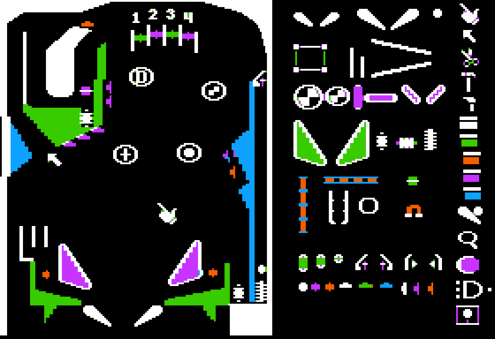

Reconhecer as linguagens de programação utilizadas para o desenvolvimento de jogos digitais.
Vamos iniciar os estudos?
PlayAssista ao vídeo abaixo para uma introdução aos seus estudos
O que é, e como montar um ambiente de desenvolvimento de jogos?
Os jogos digitais se tornaram populares no mundo todo ao longo da década de 1970. Várias empresas de desenvolvimento de games surgiram nesse período com destaque Atari e a Activision. O jogo PONG, é desta época, ele foi desenvolvido sem o uso de ferramentas de desenvolvimento de software como conhecemos hoje.
De fato, os primeiros jogos exigiam do desenvolvedor muito conhecimento de componentes de hardware, além de conhecimentos de software claro, mas nada como se conhece hoje em dia.
Entendendo que as pessoas iriam querer desenvolver seus próprios games, a Electronic Arts lançou em 1984 a Pinball Construction Set. Considerado por muitos como o primeiro "motor de jogo", permitiu aos usuários criar seus próprios jogos de pinball.
É comum chamar os softwares usados para desenvolver jogos de “Engines” ou “motores de jogos”. A partir de agora, sempre que você esbarrar com um desses dois termos, já vai saber do que se trata.

Nos anos 1990 surgem os primeiros motores de jogos 3D e ferramentas de desenvolvimento com destaque para DOOM Engine (id Software), um dos primeiros motores de jogos 3D, usado para criar DOOM.
Em 1998 foi lançada a Unreal Engine (Epic Games) - Um dos motores de jogos mais populares e duradouros, ainda em uso hoje.
QUESTÃO 1
Qual é considerada a primeira engine de jogos aberta ao público?
Nos anos 2000 houve uma expansão e democratização das ferramentas de desenvolvimento de jogos. Destaca-se nesse período o lançamento da Unity em 2005 em uma conferência da Apple, engine que se tornou popular por sua facilidade de uso e capacidade de exportar para várias plataformas.

Em 2008 é lançada a Blender Game Engine (Blender Foundation) - Uma ferramenta de desenvolvimento de jogos integrada ao popular software de modelagem 3D, Blender. Essa ferramenta foi descontinuada, e não tem mais suporte.
Nos anos 2010, surgiram uma série de ferramentas que se tornaram mainstream. A exemplo da GameMaker Studio (YoYoGames):
E em 2014 foi lançada a Godot Engine, um motor de jogo de código aberto que ganhou popularidade por sua flexibilidade e recursos poderosos.
Esses são apenas alguns exemplos de engines. No momento em que você está lendo, já devem existir vários softwares para desenvolvimento de jogos diferentes e com suporte a outras tecnologias como VR, metaverso etc. Para esta aula, usaremos a engine Unity.
Um Ambiente de Desenvolvimento Integrado (IDE) para jogos é como uma caixa de ferramentas que os desenvolvedores usam para construir seus próprios videogames.
Imagine que você está construindo uma cena espacial com peças de encaixe. Você precisaria de várias peças diferentes - algumas para as naves, algumas para armas, talvez algumas para representar asteroides, planetas! Um IDE para jogos é semelhante, mas em vez de peças de encaixe, ele tem ferramentas para criar personagens, mundos, sons e até mesmo as regras do jogo.
Um exemplo popular de um IDE para jogos é o "Unity". Ele permite que você crie jogos 3D e 2D. Com o Unity, você pode desenhar seu próprio mundo de jogo, criar personagens e decidir como eles se movem e interagem.
Você também pode adicionar sons, como música de fundo ou efeitos sonoros quando um personagem pula ou pega um item.
Em resumo, uma IDE para jogos é como uma caixa de ferramentas que ajuda os criadores de jogos a construir seus próprios mundos de videogame.
É uma parte essencial na criação de todos os tipos de jogos, desde pequenos jogos de quebra-cabeça até grandes jogos de aventura. A seguir, vamos aprender como instalar e começar a trabalhar com a Unity
Siga os passos indicados no vídeo a seguir, para instalar a Unity no seu computador.
Imagine que você acabou de ganhar um jogo novo, mas não veio com instruções. Frustrante, né? A documentação é como o manual do seu jogo, mas para a Unity. Ela te diz como tudo funciona, desde os comandos básicos até as coisas mais complicadas. É como um guia de estratégia super detalhado que te ajuda a se tornar um mestre na Unity.
Para explorar a documentação da Unity, basta acessar o link https://docs.unity.com. Lá está disponível para você o manual do editor da Unity, a referência de scripts para programadores e o link da Asset Store, que é a loja.
QUESTÃO 2
Qual dessas afirmativas melhor define uma engine de Jogos?
A Unity é uma engine de desenvolvimento de jogos muito versátil e poderosa, mas suas aplicações vão muito além dos jogos. Aqui estão algumas maneiras diferentes de como a Unity pode ser usada:
Esses são apenas alguns exemplos. A Unity é uma ferramenta incrivelmente flexível e as possibilidades são quase infinitas.
No vídeo a seguir, faremos um tour pela interface da Unity. Apesar de parecer um pouco intimidador devido à quantidade de botões e possibilidades apresentadas, você verá que em pouco tempo já conseguirá se encontrar no ambiente dessa engine.
De todas as abas que a Unity oferece, as principais que devem ser aprendidas pelo desenvolvedor de jogos digitais são:
Essas abas são fundamentais para o desenvolvimento no Unity, cada uma servindo a um propósito específico que, em conjunto, permite criar, testar e refinar o seu jogo.
QUESTÃO 3
“Esta aba permite a visualização do produto final, exatamente como será visto pelo jogador. Quando você reproduz o jogo dentro do editor da Unity, é nesta aba que você poderá testá-lo.”
Esta afirmativa se refere a qual importante aba da Unity?
Lembre-se, a melhor maneira de aprender é se divertindo. Então, divirta-se criando seus jogos na Unity!
Podemos definir os frameworks como um modelo de programação pré-pronto para o desenvolvimento de softwares e programas. Dessa forma, podemos entendê-lo como um modelo, uma base a partir da qual novos sistemas serão criados, o que agiliza o processo de criação.
Essa estrutura base, na verdade, é um conjunto de códigos genéricos, a partir dos quais se pode elaborar novos desenvolvimentos e aplicações. Isso porque, diversos programas possuem estruturas conhecidas e que já foram anteriormente utilizadas no mundo da programação.
Assim, salva-se esse projeto de modo a conseguir reutilizar a base de sua estrutura para a criação de semelhantes. Por isso, muitos entendem o framework como a “fundação” do projeto de um software.
No vídeo a seguir, vamos conhecer as principais ferramentas frameworks. Dê o play e conheça!
Sabe quando você está jogando um RPG e encontra aquela loja que tem todas as armas e itens que você precisa? As bibliotecas são como essa loja, mas para programação.
Elas são coleções de códigos e funções que outras pessoas já escreveram e que você pode usar nos seus próprios jogos. Isso te poupa um monte de tempo, porque você não precisa escrever tudo do zero.
Em jogos digitais, as bibliotecas são conjuntos de funções e procedimentos pré-inscritos que um desenvolvedor de jogos pode usar para realizar tarefas comuns, em vez de ter que escrever seu próprio código do zero.
Por exemplo, uma biblioteca de jogos pode incluir funções para renderização gráfica, detecção de colisão, manipulação de entrada do usuário, e muito mais.
No Unity, você pode acessar várias bibliotecas (também conhecidas como namespaces) usando a palavra-chave using no topo dos seus scripts. Aqui estão alguns dos mais comuns que você pode usar ao desenvolver jogos em Unity:
| Namespace | Descrição |
|---|---|
| UnityEngine | Este é o namespace principal que você usará ao trabalhar com Unity. Ele contém todas as classes e funções que você precisa para interagir com o motor de jogo Unity. Por exemplo, GameObject, Transform, Vector3, e muitos outros estão todos contidos neste namespace. |
| UnityEngine.UI |
Este namespace contém todas as classes e funções que você
precisa para trabalhar com a interface do usuário (UI) em
Unity. Isso inclui coisas como botões, texto, imagens,
sliders, e muito mais. Exemplo de uso: using UnityEngine.UI; |
| System.Collections |
Este namespace contém todas as classes e funções que você
precisa para trabalhar com a interface do usuário (UI) em
Unity. Isso inclui coisas como botões, texto, imagens,
sliders, e muito mais. Exemplo de uso: using UnityEngine.UI; |
| System.Collections.Generic |
Este é semelhante ao namespace System.Collections, mas inclui
versões genéricas das estruturas de dados que permitem
especificar o tipo de dados que a estrutura irá conter.
Exemplo de uso: using System.Collections.Generic; |
| UnityEngine.SceneManagement |
Este namespace contém classes e funções que permitem carregar
e gerenciar diferentes cenas em seu jogo. Exemplo de uso: using UnityEngine.SceneManagement; |
Lembre-se, a palavra-chave using no topo do seu script apenas diz ao Unity quais bibliotecas você quer usar este script específico. Você ainda precisa chamar as funções e classes dessas bibliotecas pelo nome quando quiser usá-las no seu código.
QUESTÃO 4
Verdadeiro ou Falso
Na blockcEm jogos digitais, uma biblioteca exige que o programador programe todos os recursos que precisa do zero.hain, os blocos possuem informações ou transações e são conectados em cadeia.
A Unity disponibiliza diversas ferramentas para os desenvolvedores. Nesta seção daremos destaque aquelas que auxiliam diretamente a lidar com os elementos do jogo na aba Scene. São elas:
Cada uma dessas ferramentas desempenha um papel crucial no processo de desenvolvimento de jogos com a Unity, permitindo que os desenvolvedores manipulem e ajustem os elementos da cena com precisão e eficiência.
QUESTÃO 5
Verdadeiro ou Falso
Com a ferramenta Move Tool, você pode alterar o tamanho de um objeto em qualquer direção.
Nesta aula, aprendemos que um ambiente de desenvolvimento de jogos é como a sua oficina personalizada para criar jogos, onde você tem todas as ferramentas necessárias ao seu alcance.
Imagine usar um Ambiente de Desenvolvimento Integrado (IDE), como o Unity, que já vem com uma porção de recursos muito úteis. Nele, você tem acesso a uma documentação completa que é como um manual de instruções, ajudando você a entender cada parte do processo.
E não se esqueça das boas práticas, que são como as regras não escritas para fazer tudo rodar lisinho; seguir essas dicas é como colocar óleo na engrenagem. Agora, o framework é o esqueleto do seu jogo, uma base pronta que você pode customizar sem ter que reinventar a roda.
Então, para montar esse ambiente, você só precisa escolher um IDE como o Unity, estudar a documentação, seguir as boas práticas e aproveitar o framework disponível. É como montar um jogo de encaixe, mas muito mais legal!